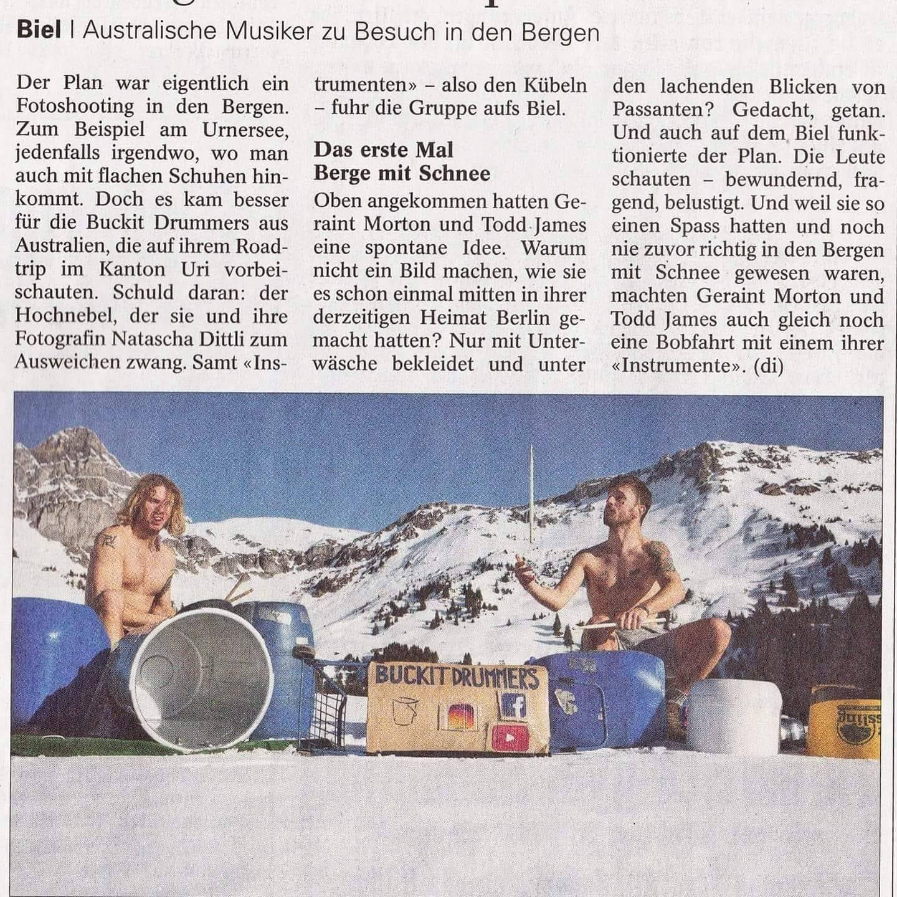

Media Gallery

Todd and Gary - Dynamic Duo
News

Bucket Drumming Takes Berlin by Storm
Recently featured in the Berlin Times, Todd and Gary's unique approach to team-building through bucket drumming has garnered widespread acclaim. Their high-energy performances and engaging workshops continue to inspire businesses and communities alike.
Read MoreVideos
Catch our bucket drumming duo in action! Check out a live performance and get a behind-the-scenes look at their journey.